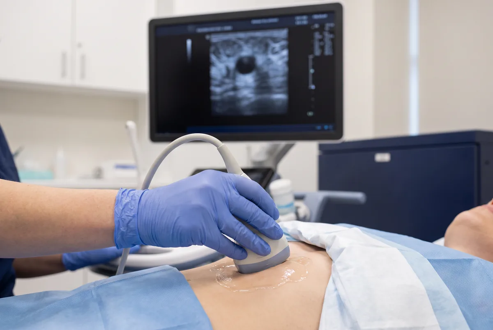

Dr. Marcelo Márquez Cruz · Mérida
Ultrasonido Mamario
Sin ayuno. Evita cremas, talco o desodorante en pecho y axilas. Trae mastografías o ultrasonidos previos. Ver preparación.
El ultrasonido mamario (ecografía de mama o seno) es el estudio de imagen de primera elección en mujeres menores de 40 años, durante el embarazo y la lactancia, y en mujeres con mamas densas (categoría C o D en la mastografía). Evalúa nódulos mamarios, diferencia con alta precisión entre quistes simples (benignos, llenos de líquido) y lesiones sólidas (que requieren mayor estudio), y es el método más sensible para detectar nódulos palpables que no se ven en la mastografía. No utiliza radiación y no produce dolor.
Cada hallazgo se clasifica según el sistema BI-RADS (Breast Imaging Reporting and Data System), el estándar internacional del Colegio Americano de Radiología. La clasificación va de BI-RADS 1 (estudio normal) a BI-RADS 6 (malignidad confirmada por biopsia). Un resultado BI-RADS 3 indica hallazgo probablemente benigno (<2% de riesgo de malignidad) con seguimiento en 6 meses. Un resultado BI-RADS 4 o 5 requiere biopsia para descartar malignidad. Esta clasificación es lo que el médico tratante necesita para tomar decisiones clínicas precisas.
El ultrasonido mamario complementa —no sustituye— a la mastografía: la mastografía es superior para detectar microcalcificaciones (que pueden ser el primer signo de cáncer), mientras que el ultrasonido es superior para caracterizar nódulos, evaluar mamas densas y guiar biopsias. También realizamos evaluación de implantes mamarios para detectar rotura intracapsular o extracapsular, y evaluación axilar para detectar ganglios linfáticos alterados en pacientes con diagnóstico o sospecha de cáncer de mama.
Indicaciones para este estudio
¿Cuándo solicitar un ultrasonido mamario?
- Nódulo o masa mamaria palpable a cualquier edad
- Mujeres menores de 40 años (primera elección sobre mastografía)
- Mamas densas categoría C o D en mastografía (complemento indispensable)
- Secreción por el pezón unilateral o sanguinolenta
- Dolor mamario localizado (mastodinia focal)
- Evaluación de implantes mamarios: sospecha de rotura
- Guía para biopsia de core o punción de quiste
- Embarazo y lactancia: estudio de elección
- Seguimiento de lesiones BI-RADS 3 (probablemente benignas)
- Evaluación de ganglios axilares en estadificación de cáncer
Preparación: No se requiere ayuno ni preparación especial. Se recomienda realizarlo en la primera mitad del ciclo menstrual (días 7-14) para reducir la sensibilidad mamaria. Traer mastografías previas si las tiene.
- Ultrasonido mamario bilateral
- Evaluación de nódulo en mama
- Complemento de mastografía
- Seguimiento de hallazgos benignos

Preguntas frecuentes
¿Qué es BI-RADS?
¿Ultrasonido mamario o mastografía?
¿Qué estudio si tengo un bulto en la mama?
¿Sirve en embarazo o lactancia?
¿Requiere preparación?
Más respuestas en preguntas frecuentes.
Contacto
Agenda tu ultrasonido
Atención en Ultrasonido Biogamma, Mérida, Yucatán. Resultados el mismo día.